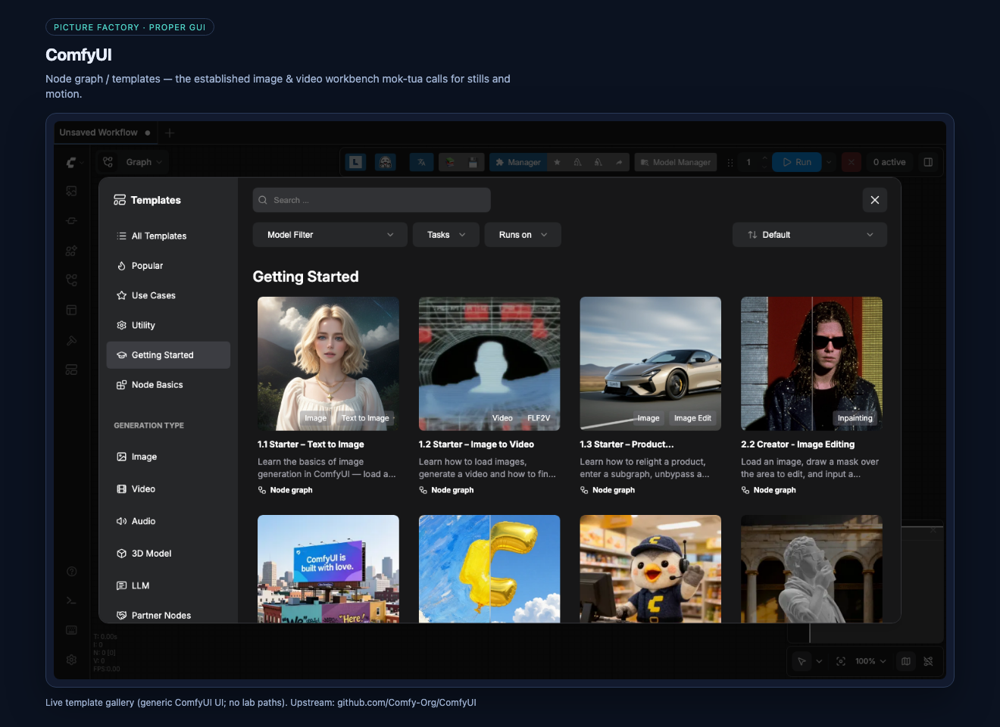
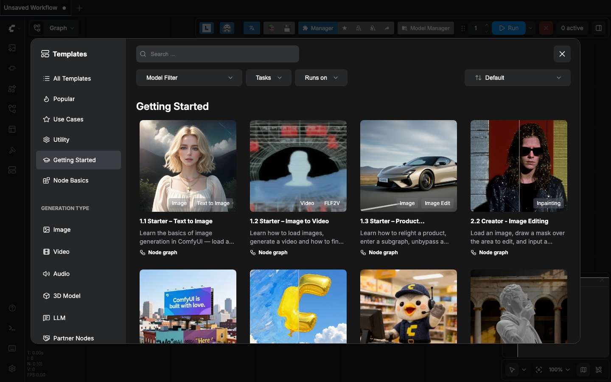

1 · Image gen
Stills & storyboard frames
ComfyUI (Stability Matrix / Pinokio) · optional Grok Imagine / Nano Banana
internal GUI · ComfyUI

Node graph + templates — the paint desk mok-tua calls for local stills (and some video graphs).
2 · Video gen
Stills → short motion clips
Wan / FramePack / AnimateDiff via Comfy · GPU worker
internal GUI · Comfy video lane

Same Comfy workbench, video templates & Wan pins — mok-tua stages S3 after storyboard stills.
3 · Director orchestration
Human desk + shot board
Director’s Console (Pinokio) · mok-tua API/CLI/TUI conductor
internal GUI · Director’s Console

Official storyboard canvas — creative session UI; mok-tua keeps ledger, QQQ gates, and launches.
4 · Voice gen
Speech, beds, line reads
ACE-Step · TTS-Story · Kokoro / local TTS · optional talk2ya path
Audio tier UIs stay in their apps
mok-tua launches & sequences — no PHI to cloud by default
mok-tua launches & sequences — no PHI to cloud by default
Voice/music apps install via Pinokio; conductor schedules them after (or beside) picture stages.
5 · Movement gen
Face · body · performance
FaceFusion · LivePortrait · FreeMoCap · talking-head polish

Face identity + body motion after (or on) video — still vendor UIs; mok-tua only orders the chain.
Product sample · storyboard sheet
What image gen + director language produce
mok-tua shot list → Comfy stills → multi-angle sheet
output · not a vendor chrome

Illustrative instructor avatar sheet — the kind of deliverable the conductor is built to sequence.